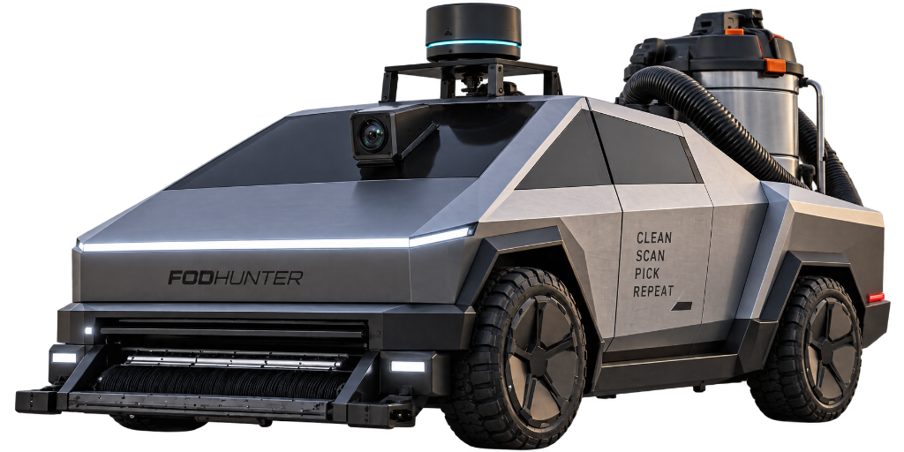

Development of an small-size autonomous wheeled robot for runway inspections
A high-speed collaborative multi-agent robotic system pairing autonomous UAV aerial macro-scouting with precision ground robotic extraction to safeguard active airfields.
Take a closer look.
Engineered to solve the critical runway safety bottlenecks that multi-million dollar stationary radar towers and manual truck sweeps cannot address.
Heterogeneous Multi-Agent Operations
By decoupling macro-scale high-speed scanning from physical debris extraction, an aerial scout UAV covers the 60m runway corridor in minutes, cued-dispatching coordinates to the ground clearance rover.

Debris Suction
Unlike optical or radar towers that only sound false alarms, the electric UGV houses an industrial 240Vac wet & dry vacuum and high-clearance intake nozzle to extract hardware, rubber debris, and asphalt fragments.
Edge AI Vision & 3D LiDAR
Real-time YOLO object detection fused with Livox Mid-360 LiDAR point clouds guarantees zero shadow false alarms and reliable classification in torrential rain and night lighting.
Gazebo Harmonic Digital Twin
Full kinematic SITL simulation verifying Nav2 path generation, costmap inflation layers, dynamic obstacle avoidance, and C2 dispatch prior to physical chassis assembly.

Engineered to the finest detail.
Explore the five modular engineering subsystems developed by the capstone engineering team.
Custom Unmanned Ground Vehicle
Engineered with 6061-T6 aluminum extrusion framing, carbon-fiber PETG ducting, and dual high-torque hub motor drive to traverse airport pavement undulations while maintaining a stable ground effect suction seal.
- Payload Capacity: 60 kg
- Intake Suction: 240Vac Vacuum module
- Chassis Material: 6061-T6 Aluminum
- Ground Clearance: Optimized 180mm suction duct height
High-Efficiency Isolated Power Train
Dual-rail isolated power distribution system separating high-noise inductive motor spikes from sensitive compute (Ubuntu host, STM32 MCU, and LiDAR).
- Primary Battery: 48V LiFePO4 / Li-Ion Pack
- Buck Regulators: Synchronous 48V→24V & 48V→12V/5V
- Motor Driver: ZLAC8015D Dual-Channel Servo
- Safety Protection: Hardware E-Stop & Current Limiting
Electrical Power Bus
Isolated DC-DC power regulation with thermal load management.
Airfield Target Extraction & Computer Vision
Autonomous aerial reconnaissance platform featuring high-throughput edge computer vision, real-time debris detection, and multi-spectral coordinate georeferencing for ground sweeper dispatch.
- Vision Model: Custom Lightweight YOLOv8 / Edge TensorRT
- Airframe: Heavy-lift quadrotor configuration with PX4
- Downlink Stream: 5.8 GHz OFDM Digital Video
- Positioning: Multi-Band RTK GNSS receiver
Edge Vision & Detection
PX4 aerial scout waypoint dispatch with real-time bounding box georeferencing.
Full-Stack Autonomous Navigation & C2 Datalink
Production-grade ROS 2 Jazzy navigation stack featuring global A* path planning, local obstacle avoidance, dynamic inflation layers, and low-latency motor bridging, coupled with robust dual-band C2 telemetry.
- Middleware & Nav: ROS 2 Jazzy Jalisco & Nav2 Smac Planner
- Simulation: Gazebo Harmonic (Gz-Sim 8) Digital Twin
- Telemetry Modem: Microhard P900 V2 (902–928 MHz FHSS)
- Controller MCU: STM32 F446RE Real-Time Motor Loop

Phase 1 Physical & Virtual Testing Field
Testing and software-in-the-loop verification are anchored at the NUS Engineering Drive 2 Field, modeled with high-resolution aerial photogrammetry into the Gazebo Harmonic digital twin environment before full chassis physical deployment.
Republic of Singapore Air Force (RSAF) × RAiD Collaboration
Supervised by Dr Tang Kok Zuea